In this project, I implemented sampling algorithms that enabled the program to display triangles onto the screen, which can be combined to form more complex polygons and geometric shapes. To display better results, I implemented ways to antialias the triangles using techniques such as supersampling.
In addition to the basic rasterization techniques, I implemented scale, translate, and rotation transformations made possible by homogeneous coordinates and matrix transformations.
Then, I implemented ways to interpolate color using barycentric coordinates as well as methods that apply texture from provided images to the triangles on the screen. To improve on the naive results from nearest-pixel sampling, I implemented bilinear interpolation as well as trilinear interpolation using mipmaps.
Putting the pieces together, I have built a decent chunk of the rasterization pipeline in this project – from using vertices to form boundaries for a triangle all the way to applying texture on the triangle to render images that mimic objects in real life. Before diving deeper into the individual tasks and how I implemented them, I wanted comment that throughout the process of working through those tasks, I was often times impressed by how the process of rasterizing objects and displaying images – finding arrangements of thousands of pixels on a screen that can mimic real-life objects – can be simplified into finding ways to display and texturize triangles and sampling pixels.
In task 1, I implemented basic triangle rasterization through sampling.
The naive approach I used to rasterize a triangle consists of three main steps. First, we calculate the rectangular bounding box for the triangle by defining the minimum and maximum x & y values. That way, we don’t waste computational resources from sampling every pixel in the viewport. Second, we would like to check if the center points of each pixel in the bounding box is actually within the triangle. This is done by the line test method (where we compute the dot product of the edge’s normal vector and the vector from the corresponding vertex to the given point). If the dot product is greater than 0, that means the point falls to the “inside” of the given line. Finally, we turn the pixel on if the results of the line test holds true for all three edges.
One modification I had to make during my implementation in order to ensure that vertices in both clockwise and counterclockwise directions can be rendered correctly was to also check if a point falls “outside” all three lines bounding the triangle. Intuitively, it is impossible for a point to be on the “outside” of all 3 lines on a 2D plane; therefore, using that intuition, we accounted for vertices that were given in opposite directions from strictly increasing x-axis.
This runtime for the naive algorithm is O(n) where n is the number of pixels within the bounding box of the triangle.
The result of the naive implementation is not ideal: the edges of the triangles are not smooth and in some cases, as shown below, we see pixels that are detached from the rest of the geometric shape.
|
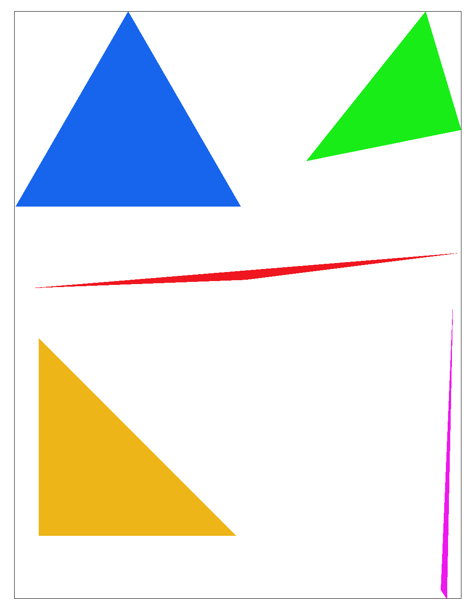
|
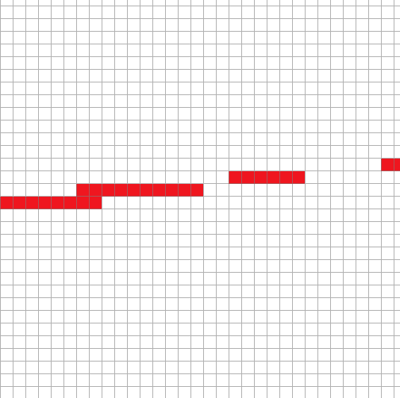
some detached pixels were turned on |
In task 2, I antialiased my triangles using supersampling.
The method of supersampling involves sampling multiple subpoints within each individual pixel and taking the average value of those sub-samples to be the final display value. Essentially, the image is rendered at a higher resolution and then scaled down to form the final image, resulting in a sharper quality & less jaggy edges.
In order to perform supersampling, I modified the sample_buffer to scale according to the input sample rate. Then, for each (x,y) location in the bounding box of a triangle, I was able to divide the pixel into a N by N grid, where N^2 is the sampling rate specified by the program. Then, I sampled the center point of each sub-pixel and stored the color to the sample buffer. When drawing the pixel itself on the view port, we take the average of all the sub-pixel samples within the pixel and output the result to the color parameter.
During the implementation, I had to decide how I would index the different samples from a singular pixel into the sample buffer. I decided to store the different sub-pixel values side-by-side in the memory, and when indexing into the buffer, we would account for this by multiplying increments and decrements by the sampling rate so we can locate the appropriate pixel value.
|
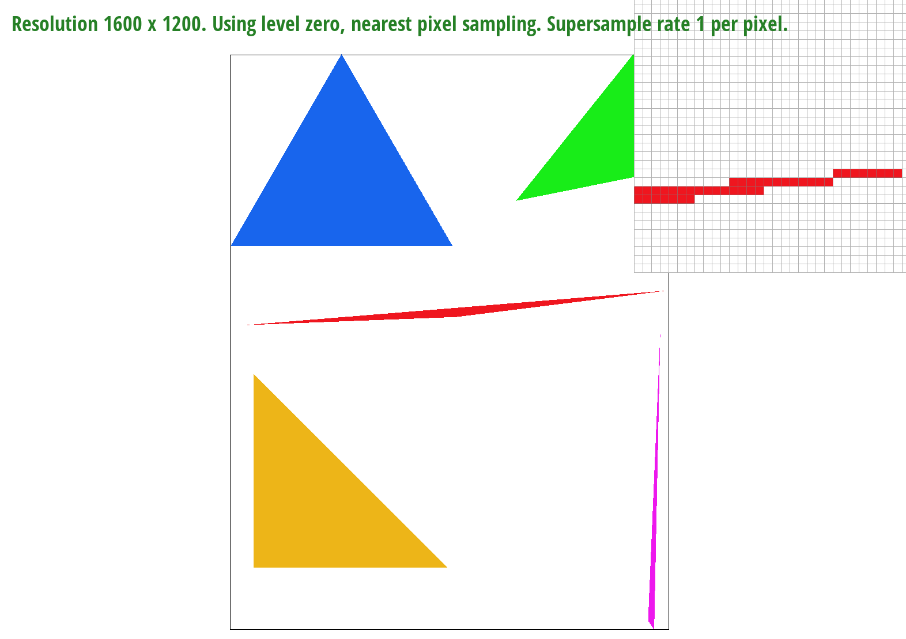
|
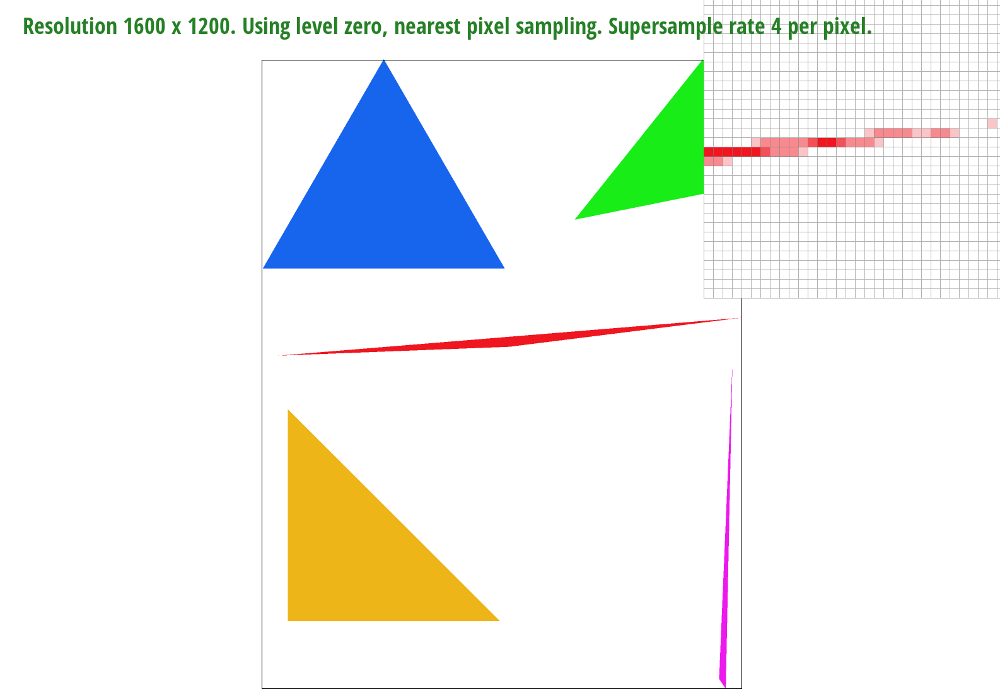
|
|
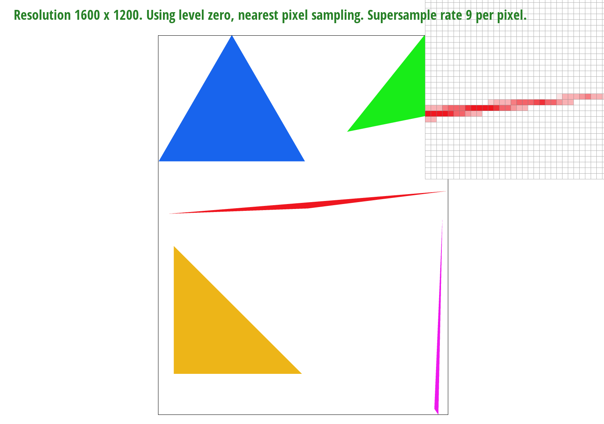
|
|
As we can see, the end result for supersampling made the edges and corners smoother and have less jaggies. As the sampling rate increases, the exact proportion of individual pixels that fall within the triangle edges become more refined, thus resulting in edge pixels that are more blended into the background.
When a pixel that is only partially inside the bounds of the triangle is supersampled, it displays a color that is between the fill color and background color depending on the proportion of the pixel’s area that falls within the bounds of the triangle.
In part 3, I implemented 3 transformations: scale, rotation, and translation.
To construct the above image, I modified the robot svg to mimic the character running towards the left of the screen (Or, alternatively, it could be interpreted as the birds-eye view of the robot after it fell to the ground from a building, assuming the components still stayed intact).
To achieve this effect, I applied rotations to each arm and leg components. Additionally, I applied translation to the leg and arm components as a whole to correct the issue where the rotation axis is not exactly on one of the vertices of the polygon. To add the finishing touch, I gave the torso a small amount of rotation towards the direction of running to mimic the action of running.
In part 4, I interpolated colors across the triangle using the concept of barycentric coordinates
Barycentric coordinates is a coordinate system that expresses points within a triangle in terms of the point’s proximity to the three vertices. The coordinate system contains alpha, beta, and gamma factors, which specify the distance from the vertex’s opposite base as a proportion of the height measured from the same base. As the following image demonstrates: the color at every single pixel within the triangle has RGB elements that represent its respective distance from the red, blue, and green vertices – which explains why the RGB spectrum is smoothly distributed across the surface of the triangle.
|
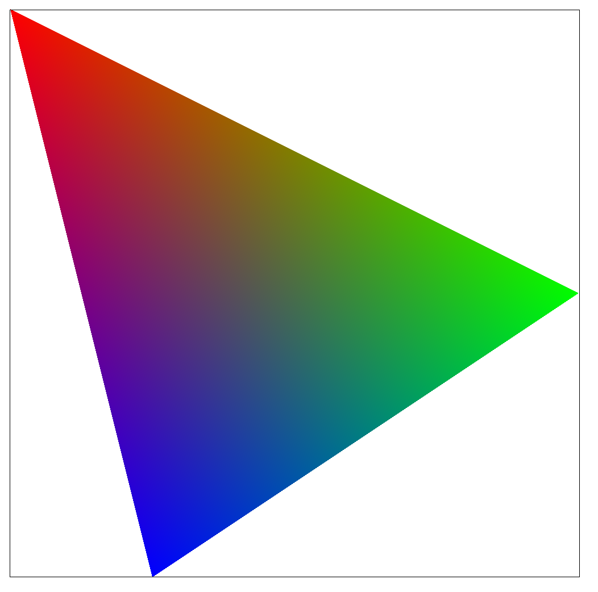
|
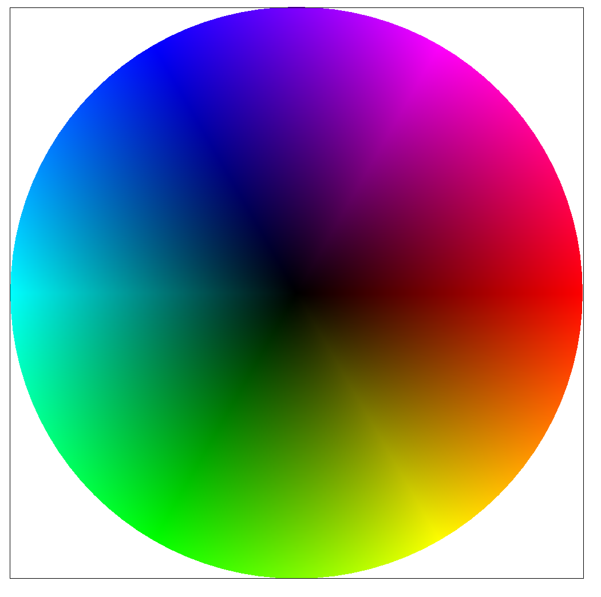
|
In part 5, I explored the various techniques of texture mapping onto a triangle
The pixel sampling method is the process of mapping pixels in one coordinate system, which represents locations on a texture image, to a different coordinate system, which represents the real pixels on the screen. To compute the coordinate system in the texture space, I used barycentric coordinates to compute where in the provided triangle the point resides. Then, using the alpha, beta, and gamma factors of the barycentric coordinates, I was able to sample the color of the corresponding pixel from the texture.
The first sampling method I used was nearest neighbor sampling, which simply means that after computing the float values of the texture location, we simply round to the integer-valued coordinate that is closest to the floating-value points by using round(). To build on that and better antelias our image, we can use bilinear interpolation, which takes a weighted average of the four closest integer pixels from the given point based on the proportion of distances from each of the individual neighbor pixels.
|
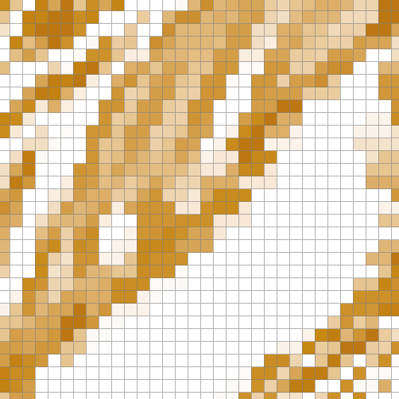
|
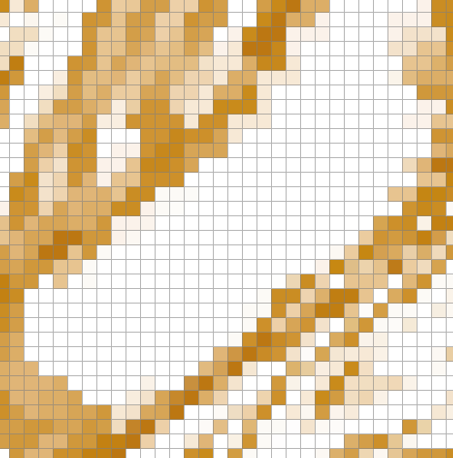
|
|
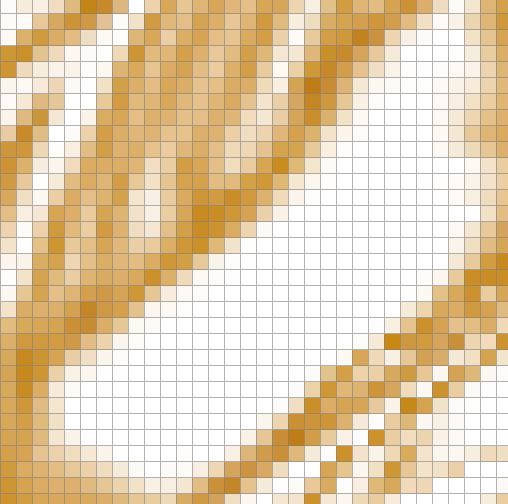
|
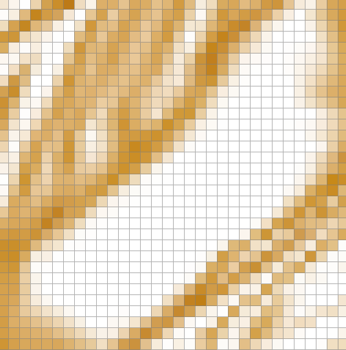
|
As we can see from the above comparison, in the center region of the Berkeley logo, the texture rendered much smoother with bilinear interpolation than nearest-pixel sampling – the difference between sample rates 1 and 16 is negligible compared to the improvement made by switching sampling methods. We can see significant improvements of texture rendering using bilinear interpolation in places where the texture has a lot of chaos and pattern density because bilinear interpolation takes into account all the pixel values surrounding the sample point, rather than just pickling one singular point which may cause aliases.
In part 6, I implemented mipmap sampling and trilinear filtering.
Level sampling is a texture sampling technique that involves pre-computation of the texture at various different distinct resolutions (full, half, quarter, ⅛, and so on) – where level 0 is the render at full resolution, level 1 is half, etc.
In the context of texture sampling, we can apply this technique to ensure that pixels that become stretched and distorted when we translate them into the texture space can be rendered at the correct resolution. Specifically, the way I implemented this method involves three steps. First, I transformed the points (x+1, y) and (x, y+1) onto the texture space alongside (x, y) and computed the vectors of those two points from (u,v), the point we would like to sample on the texture space. Second, I take the greater one from the magnitudes of the two vectors we formed onto the texture space – essentially, I want to know how moving one pixel in screen space from the provided location would correspond to a transformation in the texture space. Finally, we use the amount of pixels we moved in texture space to locate the correct mipmap level to sample the pixel.
When it comes to rendering solid geometric shapes or textures with low complexity, increasing the sampling rate is a powerful way to antialias the edges. However, it does cost significantly more computational power and memory since we are taking N times more samples and storing all the samples in the sample buffer.
One way we can decrease the storage overhead is to use pixel sampling and bilinear interpolation. In the case of bilinear interpolation for texture mapping, we are calculating the lerp function in real time and outputting pixel values without caching any values in memory, so the storage overhead is constant. However, this method also involves a lot of computation per pixel and could become expensive when the texture becomes large or complicated. Bilinear interpolation does a good job with interpolating the texture and producing smooth outcome, but one area where it falls short is addressing pixel distortion and uneven mapping between screen and texture spaces.
So, to address this issue, we use level sampling and mipmaps. For the pre-computed mipmaps, we only require ⅓ more memory storage because we are storing half of the resolution for every level that we go up the map hierarchy. It will also perform faster since the calculations are done prior to render time so we will not need to do any upsizing or downsizing during rasterization. From observation and my understanding of the problem, level sampling with trilinear interpolation produces the best results out of the methods in the scope of this project.
The image above is a custom png which is the logo from my high school. At first, we use only naive rasterization techniques. Then, with each additional image I applied one additional technique covered in this project.
|
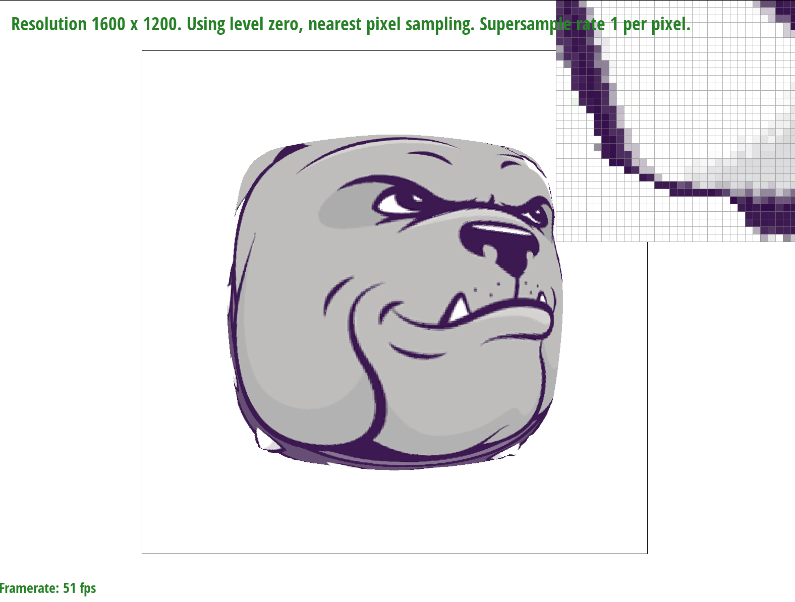
|
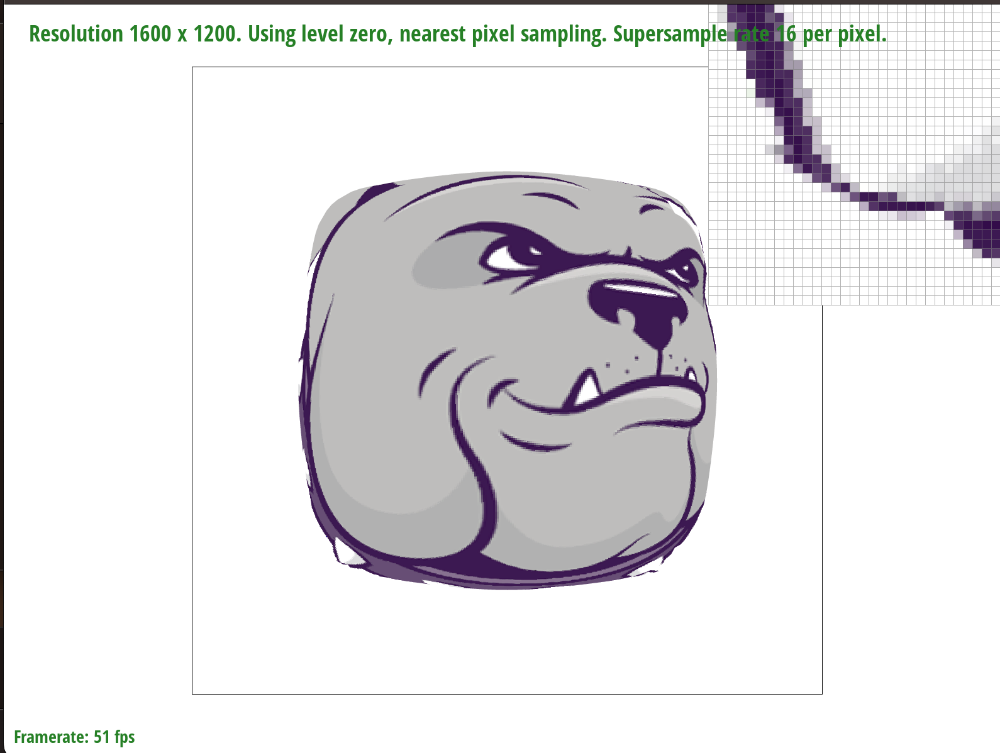
|
|
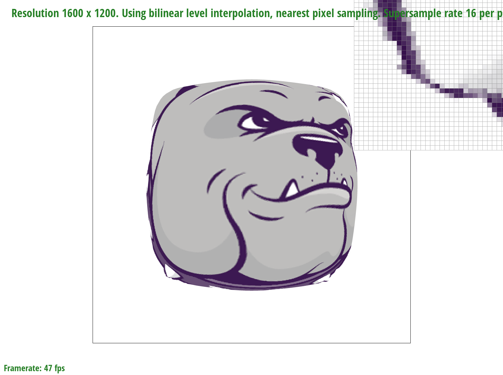
|
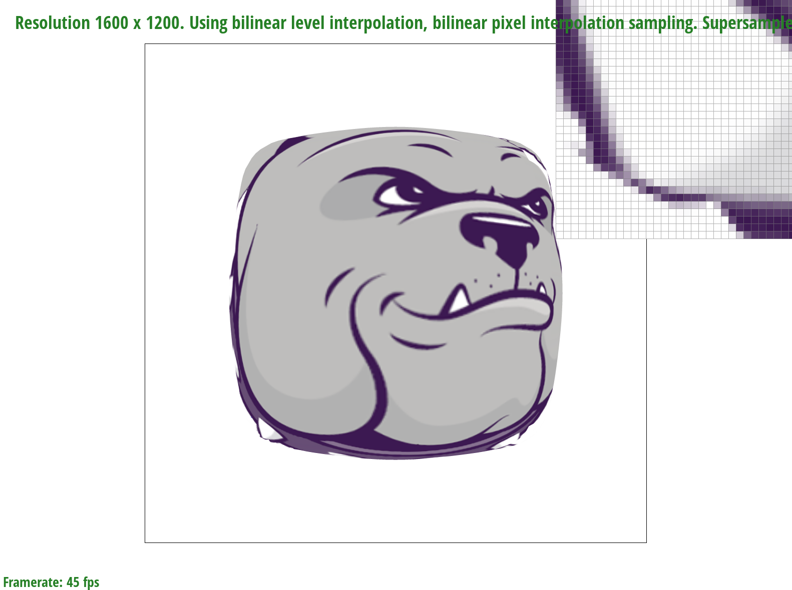
|